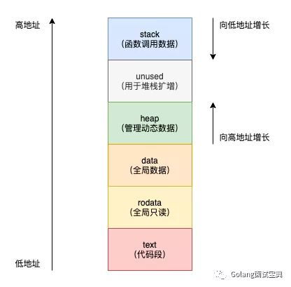

一、前言
此篇主要讲解go的通用语法和一些linux专属操作，windows专属操作可以看 go for windows
1. 环境
1 | => go version |
2. 安装gvm版本管理工具
2.1. 安装
1 | wget https://raw.githubusercontent.com/moovweb/gvm/master/binscripts/gvm-installer |
- 默认生效到
~/.bashrc，生效到zsh需要将下面一句话加到.zshrc最后
1 | [[ -s "/home/test/.gvm/scripts/gvm" ]] && source "/home/test/.gvm/scripts/gvm" |
2.2. 使用
1 | 查看可安装的版本 |
二、语法相关
1. 基本类型
1.1. 去除变量未定义提示
1 | _ = varA |
1.2. int
1) 大小
- 32位下int为4个字节，64位下int为8个字节
2) 类型转换
1 | // 转string |
1.2. 类型转换
float32 float64
1 | // 转int |
[]byte
1 | // 转string |
interface
类型判断
类型断言
1 | var f interface{} |
switch类型判断
1 | var f interface{} |
1.2. string
1) 转换
1 | // 转[]byte |
2) 单引号，双引号，反引号的区别
1 | package main |
输出
1 | a 97 |
2) 字符串截取
1 | outStr := "abcdefg" |
3) 遍历
1 | s := "abc" |
4) 修改
- string类型里面的元素是不可变的，除非赋值一个新的string
- 如果想要修改string中某一个元素，相当于拷贝了两次
1 | a := "abc" |
2. map
- 底层使用哈希map实现而非红黑树
2.1. 一些基本操作
1 | /****** map初始化 ******/ |
2.2. map取不存在的值
- 对map取值可以获取一个返回值也可以获取两个返回值用于判断是否存在
- 如果不存在采用一个返回值会返回对应value的类型的默认值
1 | func main() { |
2.3. 底层实现
1 | // /usr/lib/go/src/cmd/compile/internal/types/type.go |
注意事项
var xxx map[string]interface{}定义的xxx是一个空指针，没有指向任何地址，不能进行赋值- 初始化map需要使用make
3. array
3.1. 一些基本操作
1 | /****** array初始化 ******/ |
5. 流程控制语句
5.1. for 循环
1 | // 死循环 |
5.2. switch
- case多条件写成逗号形式，c那样的写法不适用
1 | switch v.key { |
6. 函数
6.1. 定义和返回值
1 | // 正常定义 |
6.2. 值传递
(1) go函数都是值传递
1 | func changeDatas(intData int, strData string, arrData [3]int) { |
输出
1 | 1 aaa [1 2 3] |
(2) slice、map、channel类型的看似引用传递的解释
slice
- slice本质是一个结构体，内部包含三要素：长度、容量、数据首地址
- 所以传递的也是这三个值，数据内容改变改的是地址里面的内容，外部可见，但是改了长度和容量，外部就不会变
1 | func changeDatas(sliceData []int, mapData map[string]int) { |
输出
1 | [1 2 3] map[] |
map和channel都是指针
- 本质上map和channel都是指针，所以改动外部都可见
7. 组合赋值
- 组合赋值会先将值取出再赋值给前面的变量，所以go不需要swap方法
1 | a, b := 1+1, 2+2 |
8. i++、i–
1 | i++ // 理解成 i+=1 |
9. const & iota
9.1. itoa
参考golang const 内itoa 用法详解及优劣分析
(1) 每次 const 出现时，都会让 iota 初始化为0
1 | const a = iota // a = 0 |
(2) 自定义类型
自增长常量经常包含一个自定义枚举类型，允许你依靠编译器完成自增设置。
1 | type Newtype int |
(3) 可跳过的值
1 | type AudioOutput int |
(4) 位掩码表达式
1 | type Allergen int |
(5) 定义数量级
1 | type ByteSize float64 |
(6) 定义在一行的情况
- 跟普通形式 没什么不同
- iota 在下一行增长，而不是立即取得它的引用。
1 | const ( |
(7) 中间插队
中间插队时，iota 会被覆盖掉 不再继续自增。但是用另一个 iota 接一下，又会继续自增。
示例如下，中间插入了5、3和6，3下面有itoa接，6没有。
1 | const( |
10. 并发
10.1. 基础概念
和线程的区别
- OS线程（操作系统线程）一本都有固定的栈内存（通常为2MB）
- 一个 goroutine 的栈在其生命周期开始时只有很小的栈（典型情况下2KB），goroutine 的栈不是固定的，他可以按需增大和缩小，grorutine的栈大小限制可以达到1GB，但极少情况下会到1GB。所以在Go语言中一次创建十万左右的 grorutine 也是可以的。
和线程的关系
- 一个操作系统线程对应用户态多个goroutine。
- go程序可以同时使用多个操作系统线程。
- goroutine和OS线程是多对多的关系，即m:n。
其他
- 1.5版本之前，go仅占用一个核执行
- 1.5之后，默认使用所有核
10.2. sync.WaitGroup 等待退出
1 | package main |
10.3. runtime.GOMAXPROCS(i int) 限定占用核心数
- go可以设定goroutine占用的核心数
1 | package main |
10.4. 互斥锁
1 |
11. 面向对象编程
11.1. 属性和方法
- go中使用结构体可以代表类
- 定义接受者代表方法
1 | package main |
11.2. 访问权限
- 首字母大小写可以控制访问权限
- 不过小写对整个package都可以访问，外部不可以访问
11.3. 继承
- 结构体里面直接定义另一个结构体就可以实现继承
- 但是初始化不能直接初始化父类的属性
- 同一个包内，大小写都可以访问到
1 | package main |
11.4. 多态
- 多态在go里面更多把思想转成接口
- 对外提供接口，但是存在不同实现
1 | // 定义接口Product，定义接口存在方法Use |
11.5. 析构函数
- go可以给类设置析构函数，但是析构时机是GC触发的时机
- 如果进程直接退出，由操作系统回收内存，不会触发析构函数
1 | package main |
11.6. 纯虚函数
- 对于go来说，不存在虚函数的概念，但是如果想要使用父类指针指向子类指针，必须实现父类定义的所有接口
- 接口类指向子类需要取地址，接口类可以直接调用自己的方法，会根据内存找到子类的方法调用
- 接口类指向子类内部只保存了子类的地址，所以参数传递可以值传递，改动会改动到内部子类的属性
1 | type TestI interface { |
12. 指针
12.1. int转指针
- go中限制了指针类型的转换，不允许将int转成指针类型
- 但是，转换一下想法，用二级指针进行赋值即可
1 | var tmp **testT |
13. GC 垃圾回收机制
- GC（Garbage Collection）
- 下面内容参考自 图解golang垃圾回收机制
13.1. 内存管理
程序在内存上被分为堆区、栈区、全局数据区、代码段、数据区五个部分。对于C++等早期编程语言栈上的内存由编译器管理回收，堆上的内存空间需要编程人员负责申请与释放。在Go中栈上内存仍由编译器负责管理回收，而堆上的内存由编译器和垃圾收集器负责管理回收，给编程人员带来了极大的便利性。
13.2. GC触发时机
触发GC有俩个条件，一是堆内存的分配达到控制器计算的触发堆大小，初始大小环境变量GOGC，之后堆内存达到上一次垃圾收集的2倍时才会触发GC。二是如果一定时间内没有触发，就会触发新的循环，该触发条件由runtime.forcegcperiod变量控制，默认为2分钟。
13.3. GC带来的便利和坑
1) 便利
1 | import ( |
14. struct
14.1. String() 默认打印方法
- 使用值传递实现的，打印原始和指针类型都可以输出
- 使用指针传递实现的，必须使用指针类型打印才能输出，值传递输出不出来
1 | type A struct { |
14.2. 初始化父类属性
1 | type ProductA struct { |
15. 常量
- go中常量只能是数字、布尔、字符串，其他类型无法定义成常量
16. package 包
16.1. init函数
- init函数不可被调用，是golang提供的引入包就会调用的一个初始化函数
- 对于
package main来说也是一样的，会在main函数调用前进行调用 - init可以定义多个，按照定义顺序执行
17. channel
17.1. 基本知识
- 天生的观察者消费者模式，支持多写多读
- 自带防止惊群效应的实现，读协程只会唤醒一个
1 | var wg sync.WaitGroup |
17.2. close后的特性
- close不会阻塞，关闭后可读不可写，写会崩溃
- close后，正在阻塞的消费者可以拿到一个默认值，for的方式会直接退出循环
- close后，正在阻塞的生产者会崩溃
1) close之后不能写，正在写的会崩溃
1 | func main() { |
2) close之后可以读，把没读完的读完就退出了，for就读完退出，没数据直接读拿到默认值
1 | func main() { |
17.3. 缓冲与无缓冲
- 无缓冲channel只负责数据的流转不负责存储数据，所以发送前必须有数据的接收者，否则发送会阻塞
- 缓冲channel可以储存部分数据，发送在缓冲区满之前可以发完继续运行
17.4. 只读和只写chan
- 只读和只写一般由一个可读可写的channel转化而来
1 | func productor(wch chan<- int) <-chan bool { |
17.5. 底层原理
1 | // /usr/lib/go/src/runtime/chan.go |
- 底层也是指针，所以传参传入的是指针，不用担心被拷贝
18. slice
18.1. 一些基本操作
1 | /****** slice初始化 ******/ |
18.2. 切片截取
1 | testArr := []int{2, 7, 4, 9, 1, 4, 8} |
- 可以认为切片的截取就是在原切片的基础上，返回了一个切片，data的首地址、len、cap分别改了一下，本质上复用了原始的地址空间
1 | func main() { |
18.3. 动态初始化二维数组（矩阵）
- 矩阵的长宽不确定，构建的时候就需要一个一个进行构建，类似下面这样
1 | seen := make([][]bool, r) |
18.4. 底层实现原理
底层数据结构
- slice本身是一个结构体
1 | // /usr/lib/go/src/runtime/slice.go |
扩容
- 基于
golang v1.20.3版本代码
1 | // /usr/lib/go/src/runtime/slice.go |
19. import 导入包
19.1. 普通导入
1 | import ( |
19.2. 别名导入
1 | import ( |
19.3. 隐藏导入
- 不调用，仅导入
1 | import ( |
19.4. 不需要使用包名字调用
1 |
|
20. 泛型
20.1. 泛型函数
- 类似于c++的模板函数
1 | func handle[T any](l T) { |
20.2. 泛型的限制
- 泛型不能使用
a.(type)获取类型，只能使用reflect.TypeOf()来获取
1 | func GetType[T any](a T) { |
20.3. 自定义泛型类型
comparable
- comparable只能针对
!=和==两个操作符
1 | func CompareSlice[T comparable](l, r []T) bool { |
自定义其他类型
- 使用下面的方式定义限定只能下面几种类型传递
1 | type compareType interface { |
衍生类型
1 | func Add[T int](a, b T) T { |
- 使用
~修饰的类型，可以使用其衍生类型
1 | func Add[T ~int](a, b T) T { |
官方定义的衍生类型 golang.org/x/exp/constraints
1 | // Signed is a constraint that permits any signed integer type. |
21. defer
21.1. defer调用时机和顺序
- defer是出函数作用域才调用，下面的调用是在
main end之后
1 | func main() { |
21.2. defer和命名返回值
- 命名返回值，就算没有显式赋值，defer拿到的也是最终的返回值
1 | func aaa() int { |
22. 作用域
22.1. 作用域变化的:=
- 作用域相同，不会新建同名变量
- 作用域不相同，同名变量会新建，外面的不会更改
1 | func aaa() (int, int) { |
1 | func aaa() (int, int) { |
23. 跨平台
- go可以在文件头部指定特定平台编译文件
- 具体支持的平台和架构使用
go tool dist list查看
仅在linux的amd64下编译
1 | //go:build linux && amd64 |
在linux或mac下编译
1 | //go:build linux || darwin |
三、GMP运行模型
参考一些好的帖子

1. 几个原则
- G goroutine
- M machine 也是线程的抽象
- P process 协程调度器
- M必须绑定一个P才能执行
- P默认是cpu核心数，可以使用
runtime.GOMAXPROCS(2)设置P的数量 - 每个P上面有一个G的队列不超过256个，M绑定P后，从P的队列中取G运行
- 新的G创建出来后，先加入P的本地队列中，P的本地队列满了就取一半放到全局队列中
- M把某个P上面的G队列执行完了，会从全局队列拿一批放到本地队列或者从其他P的本地队列偷一半到自己的本地队列中
- 如果G中某个系统调用阻塞了M，go底层hook了相关系统调用，会阻塞的将会把G和M绑定一起从P中排除，然后找空闲的M，没有空闲的M就直接新建一个M
- go程序启动会设置M的最大数量，默认10000. 但是内核很难支持这么多的线程数，所以这个限制可以忽略
- 可以手动设置M的最大数量，使用
debug.SetMaxThreads(6)设置，但是超过此数量会直接崩溃而不是不建立继续运行
2. 调试方法
- 设置环境变量后，执行程序就会显示调度器的状态
1 | export GODEBUG=schedtrace=1000 |
1 | SCHED 1001ms: gomaxprocs=16 idleprocs=15 threads=9 spinningthreads=0 needspinning=0 idlethreads=2 runqueue=0 [0 0 0 0 0 0 0 0 0 0 0 0 0 0 0 0] |
SCHED：调试信息输出标志字符串，代表本行是 goroutine 调度器的输出；1001ms：即从程序启动到输出这行日志的时间；gomaxprocs=16: P的数量，默认的 P 的属性是和 cpu 核心数量默认一致idleprocs=15: 处于 idle 状态的 P 的数量；通过 gomaxprocs 和 idleprocs 的差值，我们就可知道执行 go 代码的 P 的数量；threads=9: os threads/M 的数量，包含 scheduler 使用的 m 数量，加上 runtime 自用的类似 sysmon 这样的 thread 的数量；spinningthreads=0: 处于自旋状态的 os thread 数量；needspinning=0: 需要自旋的 os thread 数量；idlethreads=2: 处于 idle 状态的 os thread 的数量；runqueue=0： Scheduler 全局队列中 G 的数量；[0 0 0 0 0 0 0 0 0 0 0 0 0 0 0 0]: 16个P的本地队列中的G的数量。
四、标准库
1. encoding/json
1.1. 一些基本操作
1 | package main |
1.2. key排序转json
- go默认对
map[string]interface{}转json按照key升序转化 - 想要对key排序只能通过结构体的方式，转json会按照结构体的顺序转化
- 为空的key不想输出，可以加上
omitempty
1 | type outT struct { |
1.3. 单纯想压缩json不修改key顺序
1 | func main() { |
注意事项
- 数字类型在Unmarshal之后会转成float64，只能断言为float64
2. testing 单测
- 单测文件要以
xxx_test.go的格式，函数名以Testxxx的格式，package和要测试的文件属于同一个
1 | package service |
2.2. 性能分析
- 函数需要使用下面的定义
1 | func BenchmarkXXX(b *testing.B) { |
- 使用
go test命令跑
1 | -bench xxx 测试哪个函数 |
- 正常结束后可以使用下面命令生成报告，会自动打开浏览器
1 | go tool pprof -http=":8081" cpuprofile.out |
3. flag 控制台参数解析
3.1. 获取命令行参数
1 | package main |
输出
1 | => go run main.go a -a -b -asdfsaf cccc |
4. path/filepath 目录操作库
4.1. 遍历目录下所有文件和目录，类似 find xxx
1 | package main |
输出
1 | => go run main.go . |
4.2. 路径处理
1 | func test() { |
5. os/exec 命令行调用
5.1. 阻塞式等待返回，并输出stdout
1 | package main |
6. net/http http网络请求库
6.1. 发送post请求
1 | package main |
6.2. 忽略https的证书错误
(1) 修改默认客户端
1 | package main |
6.3. 302不跳转
1 | func main() { |
6.4. 获取tcp的四元组
1 | func main() { |
7. strings 字符串操作库
7.1. 字符串替换
1 | package main |
7.2. 裁剪两端字符串
- 只能裁剪两端的字符串，中间的不会裁剪
1 | outStr := "abffffffffabfffffffab" |
7.3. 字符串分割
Split
- 根据某字符串分割
1 | arr := strings.Split("a,b,c", ",") // [a b c] |
Fields
- 根据空格分割，多个空格视为一个
1 | arr := strings.Fields("a b c d") // [a b c d] |
7.4. 字符串比较
Compare
1 | if strings.Compare(event1[1], event2[0]) < 0 { |
8. encoding/hex 十六进制操作库
8.1. 将十六进制字符串转成数组
1 | arr, err := hex.DecodeString("aabbcc") // [170 187 204] |
8.2. 将[]byte按照十六进制打印成字符串
1 | hexStr := hex.EncodeToString([]byte("123456")) // 313233343536 |
9. io/ioutil io操作（到go1.16之后可以使用io或os库替代）
9.1. 文件读取
1 | contentBytes, err := ioutil.ReadFile("/a/b/c.txt") |
10. os 系统操作
10.1. 目录操作
1) 基本操作
1 | //判断目录是否存在 |
10.2. 文件操作
1) 整个文件读取
1 | contentBytes, err := os.ReadFile("/a/b/c.txt") |
2) 按行读取
1 | func (s *defaultParser) ParseFile(filePath string, handler func(log string)) { |
3) 写入文件
1 | func main() { |
11. stronv
1 | package main |
12. net 网络库
12.1. udp发送和接收
客户端
1 | package main |
服务端
1 | package main |
12.2. 给socket设置opt
1) 普通类型设置
1 |
2) 自定义结构体设置
- 设置sockaddr结构体
1 | func main() { |
13. time 时间库
13.1. 基本操作
1 | package main |
13.2. 时钟说明
- time结构体记录了墙上时间和单调时间
- 使用
time.Now()获取的会保存墙上时间和单调时间一起，计算Since的时候会使用单调时间进行计算 - 使用时间字符串得到的不会有单调时间，会随着系统时间变化而变化
14. sort 排序
14.1. 基本类型排序
1) 升序
1 | package main |
2) 降序
1 | package main |
- 解释一下上面的代码，
sort.IntSlice(testArr)是将[]int强转成sort.IntSlice类型，类型定义了sort需要的三个函数，本质上还是[]int sort.IntSlice是sort.Interface的一个子类实现sort.Reverse(xxx)将传入的sort.Interface转成sort.reverse类型返回- 同样
sort.reverse也是sort.Interface的一个子类实现，将Less()方法重写，反着调用原方法 sort.Sort()将sort.Interface进行排序
14.2. 二分查找
1) 普通类型
- sort包提供两个函数进行二分查找，并提供了一些基本类型的查找
1 | package main |
2) 字符串使用strings.Compare()
1 | func main() { |
14.3. 任意类型的slice排序
1) 数字类型
- 直接使用
sort.Slice排序，需要实现Less的函数
1 | type item struct { |
2) 字符串类型
1 | func main() { |
14.4. 自定义类型排序
- 需要定义一个类型的三个接口，然后调用
sort.Sort即可
1 | type NameSlice struct { |
14.5. sort内置类型
- sort内置了几个基本类型的slice，实现了几个方法，可以直接用，如IntSlice
1 | // /usr/lib/go/src/sort/sort.go |
15. image 图像库
15.1. png处理
1 | package main |
16. container/list 双向链表
- value可以是任意类型的值
- list本身不能拷贝，因为里面的element有一个指针指向root的地址，如果拷贝，root会被复制一份，将会导致element失效
- 需要将list放到结构体时，建议使用指针放置
16.1. 基本操作
1 | // 初始化 |
踩坑记
1) list放到结构体里面一定要注意结构体拷贝的问题，建议在结构体里面使用指针
1 | type test struct { |
- 原因从源码查看
1 | // src/container/list/list.go |
- 上面的Element里面有一个变量list指向root的地址，也就是下面InsertAfter判断的值
- 当进行了拷贝之后，root本身是拷贝的，地址处于新的地址上，里面的元素的list还指向拷贝前的地址，自然和当前不相等，就会插入失败
- 解决办法就是使用指针，这样拷贝的是指针，里面的内容不会变化
- 上面的写法只是实例，实际场景经常会出现在构造函数构造完元素后返回了一个拷贝，如下面的错误写法
1 | type Allocator struct { |
17. runtime 一些运行需要的变量和方法
17.1. 常用变量
1) runtime.GOOS 操作系统类型
1 | func test() { |
18. io io相关操作
19. regexp 正则库
19.1. 提取字符串
- 括号内的是要提取的字符串，输出为整体匹配到的字符串加括号匹配的字符串
1 | func TestRegexDefault(t *testing.T) { |
20. archive/zip zip相关操作
20.1. 解压缩
1 | func unzip(zipFile string, destDir string) error { |
20.2. 压缩
1 | // srcFile could be a single file or a directory |
21. exec 执行命令
21.1. 打开浏览器
1 | func openBrowser(url string) { |
22. heap 堆
22.1. 小根堆
- 基础类型小根堆直接使用
sort.IntSlice等可以实现
1 | type lhp struct{ sort.IntSlice } |
- 上面代码大致解释就是，使用hp继承
sort.IntSlice的各种基础方法 - 实现Push和Pop两个接口即可实现最小堆
22.2. 大根堆
- 照抄小根堆，然后将Less重写一下就好了，j和i互调顺序
1 | type bhp struct{ sort.IntSlice } |
23. context
23.1. 关闭子协程的方式
1) 手动关闭协程
1 | func main() { |
2) 定点关闭协程
1 | func main() { |
3) 定时关闭协程
1 | func main() { |
4) 带原因的取消
1 | func main() { |
23.2. 携带上下文
- 当前找不到会找父级的context
1 | func main() { |
24. os/signal 信号处理库
24.1. 捕获信号
1 | func main() { |
- 常见的操作对应的信号
| 操作 | 信号值 | 描述 |
|---|---|---|
ctrl+c | syscall.SIGINT | 中断 |
ctrl+z | syscall.SIGTSTP | 停止 |
fg或bg | syscall.SIGCONT | 继续 |
25. fmt 格式化输出库
25.1. Sprintf 格式化字符串
1) 自定义顺序格式化参数
1 | func main() { |
26. math/bits 二进制相关
26.1. 统计二进制中1的个数
1 | func main() { |
五、cgo
1. 多平台编译
1.1. 平台不同的flag
1 | // #cgo CXXFLAGS: -D CGO -D FORCE_POSIX -I ${SRCDIR}/../../Core -std=c++17 |
2. pkg-config 自定义动态库路径
将 CGO 与 Pkg-Config 和 自定义动态库位置一起使用
六、go命令相关
1. go test 执行单测用例
1 | ######### 指定目录 ########## |
2. go build 编译二进制
- go build不区分平台，可以在任意系统上编译其他大多数系统的版本
2.1. windows 32bit和64bit
1 | 32位编译 |
2.2. 全平台编译makefile示例
1 | TARGET_NAME = testaaa |
2.3. 编译给c调用的动态库
代码上
- 必须有
package main和main函数，但是可以什么都不做 - 必须包含
import "C" - 要导出的函数必须加上
//export funcName，export前没有空格 - 导出函数本身无所谓首字母大小写
1 | package main |
编译
1 | 要先安装标准库，会生成目录到 /usr/lib/go/pkg/linux_[arch]_dynlink/ |
结果
- 会在当前目录生成一个静态库文件（
libtest.so）一个头文件（libtest.h） - strip后查看
libtest.so，函数已经导出，依赖上述生成的目录下的libstd.so
1 | => strip libtest.so |
3. go env 设置环境变量
- 设置的全局变量是全局生效的，重启都会生效
1 | 设置环境变量 |
实例
- 可以写到makefile中，跨平台的makefile
1 | main.exe: main.go |
4. go install 安装全局包
1 | go install -v github.com/cweill/gotests/gotests@v1.6.0 |
4.1. 常用工具链接
- gotest:
github.com/cweill/gotests/gotests - go-outline:
github.com/ramya-rao-a/go-outline - gopls:
golang.org/x/tools/gopls - dlv:
github.com/go-delve/delve/cmd/dlv
5. go generate 执行命令
- 在go文件中定义的命令，调用
go generate时会执行 - 需要在
main.go文件中如下定义，注释和go之间不能有空格，会执行generate后面的命令 - 一般用于生成语言文件或错误码信息等可以用命令生成的文件
1 | //go:generate gf pack -y i18n catalog/catalog.go |
6. dlv 调试go程序
1 | go install -v github.com/go-delve/delve/cmd/dlv@latest |
6.1. dlv监听远程调试
1 | 监听6666端口，挂载16703进程号 |
- vscode中launch.json如下
1 | { |
五、框架
1. 工程知识
1.1. go.mod
go.mod是go工程用来管理包使用的，类似于nodejs的package.json文件
1) 创建新工程
1. 先生成go.mod文件
1 | 初始化一个test工程 |
2) go mod 一些基本操作
1 | 添加工程依赖包，会加入到go.mod文件中的require中 |
(1) vendor
1 | 同步依赖包到当前的vendor目录 |
2. goframe
2.1. 安装配置
安装gf命令行工具
- goframe安装需要一个gf命令行工具
1 | 下载安装gf |
- 默认gf命令行工具不支持sqlite3，如果需要，上面安装完之后，自己编译一版sqlite3的gf工具
- 确保有gcc编译环境
1 | clone仓库 |
初始化
- 如果需要使用sqlite3，需要在项目根目录执行
1 | go mod download github.com/mattn/go-sqlite3 |
代码生成
- 根据
config.toml生成数据库代码，这个比较方便
1 | gf gen dao -c config/config.toml |
2.2. 开发知识点
2.2.1. orm时间维护功能
- orm的数据库更新操作会自动更新updatedAt、createdAt、deletedAt等字段
- 不想要更新字段需要加上
Unscoped()
1 | db.Table("user").Unscoped().Data(g.Map{"name" : "john guo"}).Where("name", "john").Update() |
2.2.2. 前后端字段对应
- gf中使用下面的方法可以将前端传入参数解析到struct的对应成员中
1 | // app/model/xxx.go |
- 解析规则，会把前端传入的字段去除除了字母和数字的所有特殊字符，然后不区分大小写比较
- 下面的几个key都可以解析到上面的
data.Content中
1 | { |
六、好用的第三方库
1. github.com/google/uuid uuid
1 | package main |
输出
1 | ab8d63ef-f0c4-a01d-a6ef-5f2c3efff5af VERSION_4 |
2. github.com/makiuchi-d/gozxing 二维码解析和生成
github.com/tuotoo/qrcode没成功的，这个成功了
1 | package main |
3. golang.org/x/mobile go开发android和ios
4. github.com/shirou/gopsutil/process 获取进程相关信息
4.1. 获取进程信息
1 | // 获取进程对应的目录 |
5. github.com/miekg/dns 构造dns包发送
5.1. 获取域名特定类型的解析
1 | func resolveDomain(domain string, server string, dnsType uint16) (r *dns.Msg, err error) { |
6. golang.org/x/text/encoding/simplifiedchinese 中文编码转换
1 | import "golang.org/x/text/encoding/simplifiedchinese" |
7. github.com/google/gopacket
7.1. 构造ip包
1 | import ( |
8. github.com/songgao/water linux虚拟网卡设备
8.1. 构造tun设备读写数据
1 | func main() { |
9. github.com/smartystreets/goconvey/convey 单测辅助工具
- 按照树的结构执行单测
9.1. 一般用法
1 | func TestConvey(t *testing.T) { |
9.2. convey执行顺序
1 | func TestConvey(t *testing.T) { |
- 实际输出
1 | === RUN TestConvey |
- 从上述代码可以得出结论，每一个Convey的出现，都是把父节点的函数复制了一份，只执行当前的Convey，兄弟Convey不执行
- 所以每个父节点有几个子节点，其所在函数都会执行多少遍，每一遍只有一个Convey生效，其他的都是空
- 上面代码可以理解为
1 | func TestConvey(t *testing.T) { |
测试集的实际效果
1 | func TestConvey(t *testing.T) { |
- 输出如下，可以看出，循环在每个测试点都重新跑了一遍
1 | === RUN TestConvey |
10. 国际化库
10.1. github.com/mylukin/easy-i18n/i18n 轻量简单的国际化库
1) 准备工作
- 在根目录建立
locals目录，里面只能放json文件 - 文件名只能是语言名称且只能是
golang.org/x/text/language包中可以Make出来的名称
1 | locales |
- 名字限制如下
1 | package main |
- 也可以用系统内置的一部分
1 | func main() { |
- json文件内容如下
1 | { |
- 安装命令
easy-i18n
1 | go install github.com/mylukin/easy-i18n/easyi18n@latest |
- 执行命令将json生成go文件
1 | easyi18n generate --pkg=catalog ./locales ./catalog/catalog.go |
- 然后对应的go文件直接包含即可
1 | import ( |
2) 使用
1 | package main |
10.2. github.com/gogf/gf/i18n/gi18n 强大的gf框架中的语言库
1) 语言文件分离放置
- 在项目根目录新建
i18n目录，按照语言名称新建不同的目录，名字没有限制 i18n是默认的目录名，也可以自定义，自定义则在gi18n.New()设置到Options中就好- 里面可以放很多个文件，根据不同模块命名即可，文件可以是toml、yml、json、xml等
- 目录结构如下
1 | i18n |
- toml格式内容如下
1 | # 这个是注释 |
- 使用如下，需要设置语言到ctx中，然后直接翻译成字符串
1 | package main |
2) 语言文件打包到二进制
- 使用gf命令将文件打包到go文件
1 | 直接打包保留i18n的目录 |
- 然后对应的go文件直接包含即可
- 不过go自己会找当前工程目录下的i18n目录（绝对路径），所以要测试可以重命名此目录进行测试
1 | package main |
11. github.com/agiledragon/gomonkey hook函数很好的一个库
11.1 使用
踩坑
1) 直接go test不生效，vscode调试可以
- 原因是直接跑编译器会自动优化代码，而此库不能对代码做优化，所以需要加
-gcflags "all=-l" - 在vscode中点击
run test则需要添加下面的配置到settings.json中
1 | { |
12. github.com/go-redis/redis/v7 redis操作库
12.1. 使用示例
1) 测试连接
1 | package main |
2) 扫描key
1 | func main() { |
3) 增删改
1 | func main() { |
13. golang.org/x/sync/semaphore 信号量
1 | package main |
七、实战
1. 搭建简单http服务器
1.1. 模板
1 | package main |
1.2. 静态页面路径返回
最简单跟目录返回
1 | package main |
其他路径返回页面
1 | package main |
1.3. 上传文件
1 | package main |
1.4. 302跳转
简单跳转
1 | package main |
特定目录跳转
1 | package main |
1.5. 代理转发
- 定义tr忽略证书错误
1 | package main |
1.4. 处理post的body数据
- json数据存在body里面
r.Body只能读取一次，读完就会关闭，需要再次读取需要加上下面注释说明的代码
1 | package main |
八、算法和数据结构的实现
1. 数据结构
1.1. 队列
- 可以使用
list.List进行实现
1 | func main() { |
1.2. 栈
1) list.List实现
1 | func main() { |
2) slice实现
- slice实现有个好处就是，入栈会动态扩容，出栈容量会保留
- slice实现队列会导致重复内存申请
1 | func main() { |
1.3. 链表
- 直接使用
list.List就好，单向双向都支持
1.4. 大（小）根堆
- 官方库有heap，可以进行此操作，但是需要自己实现几个接口
1 | type bhp struct{ sort.IntSlice } |
1.5. 二叉树
1 | type TreeNode struct { |
2. 算法
2.1. 全排列
1 | func permutation(str []byte, index int, f func(str []byte)) { |
2.2. bfs 广度优先算法
1) 二叉树的广度优先遍历
1 | type TreeNode struct { |
2) 方格中找两点最短路径
- 两格之间步数为1，
#作为墙不可走
1 | type pointT struct { |
九、go.work 大工程开发利器
vscode只能当go.mod在根目录的情况下才能进行提示，而在大工程情况下，go.mod可能不止一个。使用go.work之后，可以解决这个问题
1 | 初始化go.work |
踩坑记
1. 编译报错
1.1. method has pointer receiverd
- 由于定义的接口多个方法的接受不一致导致
- 部分方法实现使用了指针，部分使用了原始类型
- golang编译器发现
*T类型实现了接口，调用的时候传入的又是T就给报错了
2. 协程相关
2.1. 循环起协程
- 迭代器会被更改，最终留下的是最后一个
- 应该当参数传入
1 | func main() { |